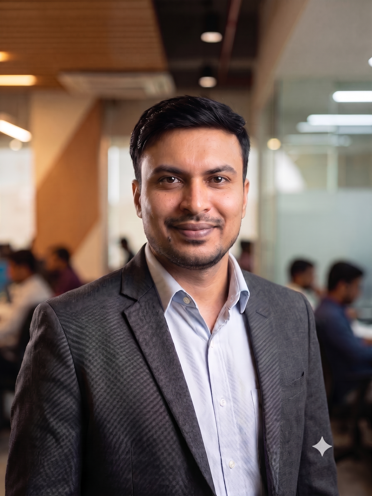

Senior DevOps & Platform Engineer with 8+ years of experience in cloud infrastructure, automation, and observability[cite: 4]. Proven expertise in designing scalable solutions across AWS, Azure, and GCP, alongside advanced Linux administration (RHEL/Ubuntu) and enterprise network appliance management[cite: 5]. Specialized in automating deployments via Terraform and orchestrating microservices on Kubernetes, while optimizing system reliability and conducting deep-dive root-cause analysis for enterprise applications[cite: 6].
Python, Bash, Shell Scripting, Ansible[cite: 8].
Grafana, Prometheus, Nagios, Loki, Alert manager, Tanium[cite: 9].
AWS, Microsoft Azure, Google Cloud Platform (GCP), Terraform, AWS CloudFormation, ARM Templates, GCP Deployment Manager[cite: 10].
AWS Organizations, Control Tower, Security Hub, IAM Identity Center (SSO), Service Control Policies (SCPs)[cite: 11].
AWS Transit Gateway, Azure ExpressRoute, GCP Cloud Interconnect, AWS WAF, Azure Application Gateway, F5 BIG-IP LTM[cite: 12].
AWS GuardDuty, Azure Key Vault, GCP Cloud KMS, AWS KMS, Secrets Manager, CloudTrail[cite: 13].
Jenkins, GitLab CI, GitHub Actions, Git, GitHub, GitLab[cite: 14].
Docker, Kubernetes, Helm, Docker Swarm, Podman[cite: 15].
Oracle Database, MySQL, PostgreSQL, MongoDB[cite: 16].
F5 BIG-IP LTM, AWS Elastic Load Balancing (ALB/NLB), Azure Load Balancer, Azure Application Gateway[cite: 17].
Linux (Ubuntu, CentOS, RHEL 6/7/8/9), Windows Server, Nginx, Apache HTTP, Tomcat, Oracle WebLogic[cite: 18].